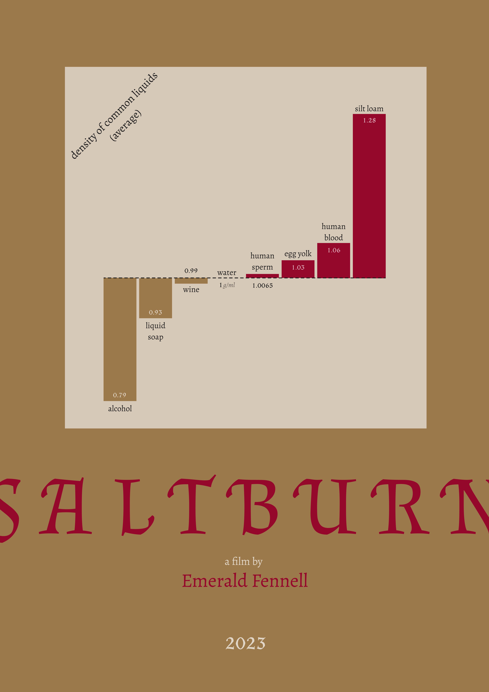
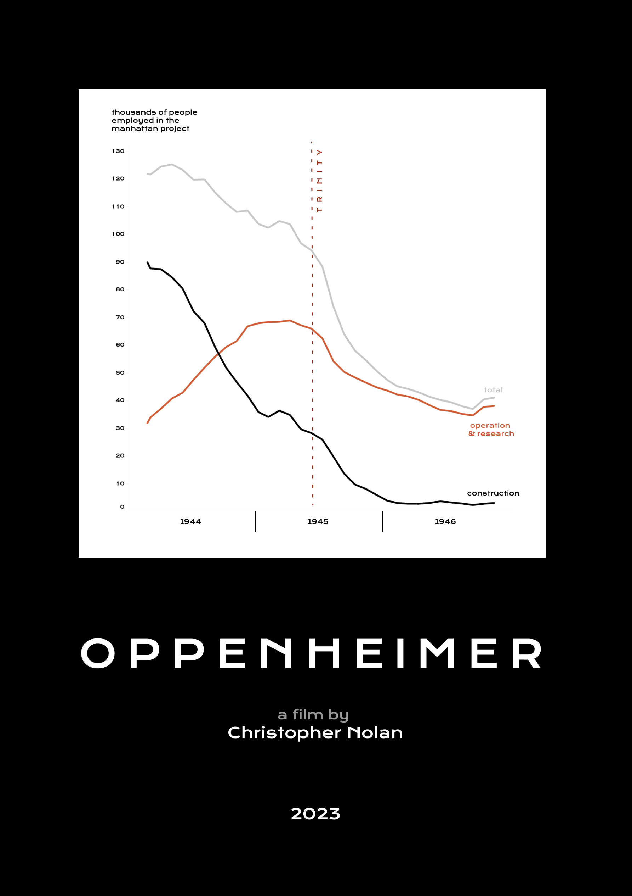
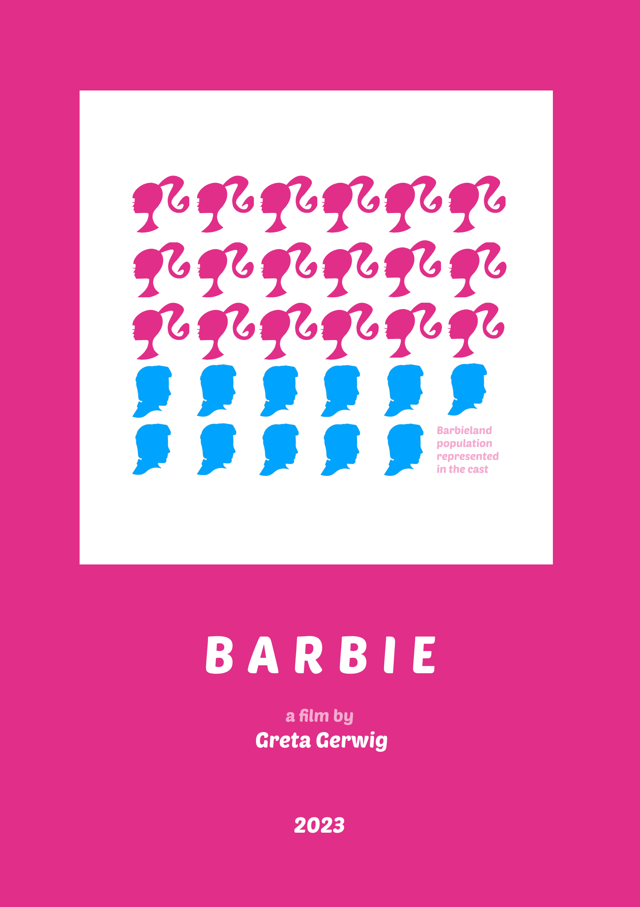

Data Movie Posters

I'm starting a new project series. The idea is simple: I watch a movie, reflect on it and create a poster for the movie including some data background.
Each motion picture has some data related to it.
Therefore, the combination of the traditional movie poster format and more technical dataviz and infographics techniques can be used to shed light on insights from that data.
As a member of a movie club, where film screenings and discussions take place on a monthly basis, I can almost guarantee that contributions to this project will be somewhat regular and it will live for a pretty long time.
I've chosen Figma as a primary design tool for poster creation, which is quite a challenge, as I've never used it beforehand.


Here I honestly failed the Figma-only constrained,
as I've cheated a bit and used Tableau to produce the plot.


More stuff to come. Stay tuned!